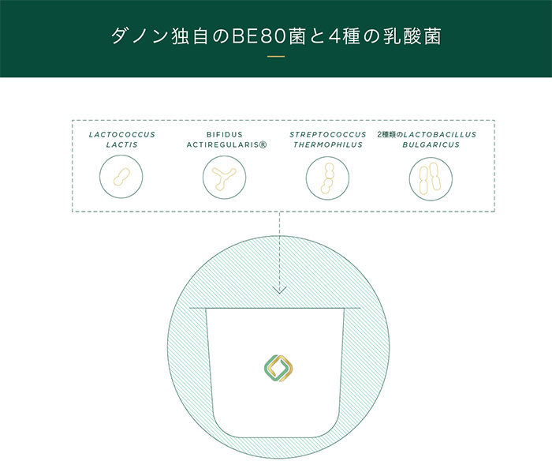

ビオのBE80菌と、
厳選された4種の菌の組合せ

ビオの開発当時、ヨーグルトは43℃の酸性条件で発酵させるのが一般的でしたが、この条件はダノン独自のBE80菌を増殖させるには適していませんでした。
そこで、BE80菌を増殖させる最適条件を作り出すために、4種類の菌や製造工程とBE80菌の組み合わせを検討し始めました。
数年にわたる研究開発を経て選んだのは、37℃という低めの温度で発酵してより酸味がマイルドなStreptococcus thermophilus菌と、２種類のLactobacillus bulgaricus菌。
この環境下でBE80菌は何倍にも増え、ビオのマイルドな味を引き出し、さらにLactococcus lactis菌を加えることで、ビオのクリーミーな舌触りが生まれました。
このBE80菌の増殖に最適な条件の元で作られたダノンビオ（１個あたり）に含まれるBE80菌の数は、なんと44億5千万個（ビフィズス菌Bifidobacterium lactis CNCM I-2494）。
厳選された4種の菌とBE80菌が一体となって、他にはない製品が誕生しました。